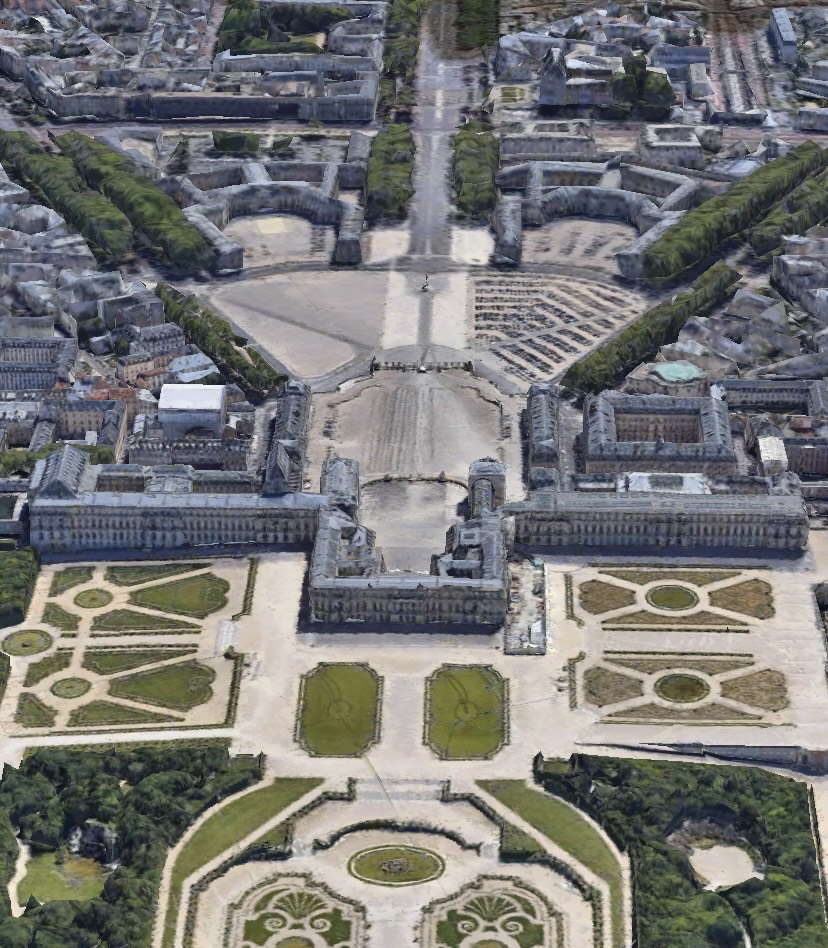

Pałac wersalski (fr. château de Versailles) – pałac królewski w Wersalu, na przedmieściach Paryża, symbol francuskiej monarchii absolutnej tzw. ancien régime.
Pałac projektowali architekci królewscy Louis Le Vau i Jules Hardouin-Mansart. Wnętrza projektował Charles Le Brun, a André Le Nôtre zaprojektował ogrody. W 1682 pałac w Wersalu stał się oficjalną rezydencją króla Francji i Wersal przejął rolę faktycznej stolicy kraju. W XVIII w. w parku wersalskim wzniesiono dwa mniejsze pałace: Grand Trianon i Petit Trianon.
Pałac jest odwiedzany przez ponad 7 milionów zwiedzających rocznie i jest trzecią największą atrakcją turystyczną Francji. Posiada łączną powierzchnię 63154 m2. Znajduje się w nim 2300 pomieszczeń, z których 1000 udostępnia się publiczności.W obfitującym w zwierzynę lesie wersalskim w lipcu 1589 polował Henryk IV, który zbliżał się wtedy do zbuntowanego Paryża wraz ze swym kuzynem Henrykiem III. Powrócił tam jako król ze swym sześcioletnim synem.
Początki pałacu wiążą się z pasją myśliwską Ludwika XIII, który wielokrotnie polował w lasach między zamkiem w Saint-Germain a Meudon (las Val de Gallie). Jego długie polowania kończyły się niejednokrotnie, wraz z zapadnięciem zmierzchu, noclegiem w jednej z gospód w Wersalu, wsi położonej na szlaku handlarzy bydłem z Normandii do Paryża. Otoczenie królewskie, oburzone na niegodne króla warunki noclegu, skłoniło go do wybudowania niewielkiego zameczku myśliwskiego w połowie drogi między Saint-Germain i Meudon.
W wyniku swego rodzaju przetargu (adjudication à la chandelle) nadintendent budowli królewskich, Jehan de Fourcy, wybrał 10 września 1623 wykonawcę zamówienia – Nicolasa Huau. Prace postępowały na tyle szybko, że zamek był gotowy do końca zimy, a król po raz pierwszy spędził w nim noc 9 marca 1624. Była to budowla skromna, wzniesiona przy wykorzystaniu niewielkich środków, ściany zdobiły dekoracje gipsowe, a dach pokryty został łupkiem. Król był dość częstym gościem w Wersalu, nawet wtedy gdy nie polował. W końcu 1629 urządzono salę do gry w jeu de paume (rodzaj ówczesnego tenisa).
Ludwikowi XIII tak bardzo spodobały się okolice Wersalu, że postanowił powiększyć i upiększyć swój zameczek. Prace rozpoczęto w 1631, a zakończono w 1634 pod kierownictwem architekta Philiberta le Roy. Pałac został stopniowo, tak by można było z niego cały czas korzystać, rozebrany i zbudowany na nowo. Pomimo że w zasadzie wciąż oparty był na tym samym planie, to jednak wyraźnie się powiększył. Dodano m.in. sześć wież prostokątnych (tour carré). Fasada uzyskała styl typowy dla okresu panowania Ludwika XIII, tzn. zastosowano jasny kamień i cegłę. Ponadto na 70 hektarach przylegających gruntów urządzono park. 8 kwietnia 1632 król zakupił tereny domeny wersalskiej od Jean-François de Gondi, arcybiskupa Paryża, za 60 tys. liwrów. Ogółem projekt kosztował Ludwika XIII niecałe 200 tys. liwrów, co nie było sumą wygórowaną: późniejsza rozbudowa przez Ludwika XIV była 500 razy bardziej kosztowna.